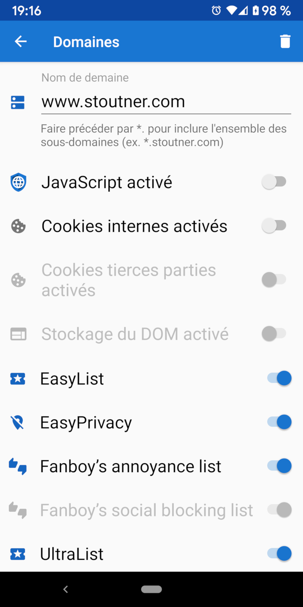

Navigation Web sécurisée Navigation Web sécurisée
Navigation Web sécurisée Navigation Web sécuriséePar défaut, Privacy Browser permet de naviguer avec JavaScript, les cookies et le stockage DOM désactivé. Cependant, certains sites Web ont légitimement besoin que ces fonctionnalités soient activées pour fonctionner correctement. Les paramètres de domaine peuvent activer automatiquement un ensemble de fonctionnalités spécifié lors de la visite d'un domaine désigné.

Lors de la visite d'un domaine pour lequel des paramètres de domaine sont spécifiés, l'arrière-plan de la zone de texte de l'URL est vert.